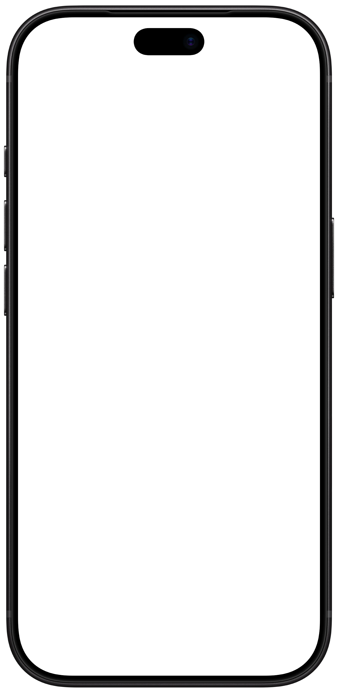

MyReciPaliPhone beta
Saves recipes from TikTok and Instagram and builds the shopping list.
A recipe library for the things you save and never cook. The phone on the right runs on the app's real screens.
- SwiftUI
- SwiftData
- Foundation Models
- Laravel
- PostgreSQL
- Offline first, with two-way background sync and conflicts settled by version.
- On-device import that turns a caption into ingredients and steps, with a server model as fallback.
- Seven SwiftData schema versions, migrated in place.
- One limit: if the steps only live in the video, it won't invent them.
